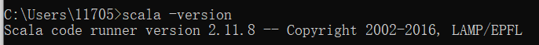
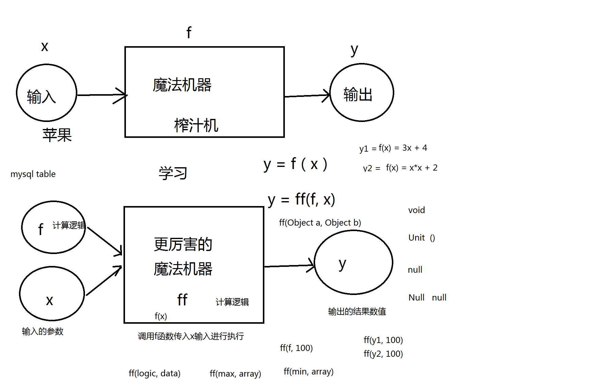

scala课程内容:
scala的基础语法 / python一天的内容
scala的面向对象
scala的高级特性
scala的并发编程actor akka
----------------------------------------------------------------------------------------------------------
Scala = Scalable + language(可扩展的语言)
The Scala Programming Language
Scala combines object-oriented and functional programming in one concise, high-level language. Scala's static types help avoid bugs in complex applications, and its JVM and JavaScript runtimes let you build high-performance systems with easy access to huge ecosystems of libraries.
java中用javac命令编译 java命令运行。
与之对应的, Scala用scalac命令编译, scala命令运行。
java源代码的后缀是.java , 而scala源代码的后缀是.scala。他们编译出来的文件的后缀都是.class
javac scalac 本质上，都是把文本文件的代码编译成.class文件
JVM 加载 class文件执行。 然后从一个入口开始执行。也就是说Scala的.class文件也可以在jvm中运行
所以可以得出结论： 安装scala 要安装JDK
但是： 安装spark 要不要安装 scala 呢？ 不需要。虽然spark的源码是scala, 但是早已被编译成了.class文件, 所以安装了jdk即可使用spark。只有需要查看spark源码的时候才需要安装scala。
基于scala语言的大数据组件有三个: kafka、spark、flink。
spark虽然是使用scala编写，但是也提供了scala java python R 语言的API, 也可以使用这些api用自己喜欢的语言去操作spark。
------------------------------------------------------------------------------------------------------
环境安装：(所有的安装在pdf都有详细说明, 一些细节见下文中补充的内容。)
java python scala
需要注意的是所有语言的编程环境最好都直接用root用户安装, 便于所有用户统一使用一个编程环境。(而且其他用户是不能更改/etc/profile文件的)
版本选择：
java:
java 8 只支持向后兼容,也就是说java8写的代码java7非常可能运行不了
使用低版本的编译器编译的代码一定能在高版本中执行
python：
python2 python3
停止更新 持续向前发展
scala: 2.11.8
2.10.x spark1.x
2.11.x spark1.x spark2.x
2.12.x spark2.x
根据spark去选择
windows
1、java: 各种下一步，自己配置环境变量
2、python： 各种下一步，但是有一种中，要去勾选是否配置环境变量
3、scala： 各种下一步直接完成
linux
1、java和scala安装方式一模一样
2、python3到时候单独讲， 比较复杂
兼顾一个操作系统，能运行python2也能运行python3的代码
--------------------------------------------------------------------------------------------------
scala的安装:
版本的选择
版本的选择主要看你要用的是哪个spark版本。如http://spark.apache.org/docs/latest/中有这样一句话:
Spark runs on Java 8/11, Scala 2.12, Python 3.6+ and R 3.5+. Java 8 prior to version 8u92 support is deprecated as of Spark 3.0.0. For the Scala API, Spark 3.1.1 uses Scala 2.12. You will need to use a compatible Scala version (2.12.x).
这是说明了spark3.1.1使用的scala版本。
目前我们安装的选择版本如下:
spark-2.3.1
scala-2.11.8 (之所以Scala选择2.11.x版本是因为它支持spark1.x版本和spark2.x版本, 而scala2.12.x不支持spark1.x, 但如今spark3.x要求必须使用scala2.12.x了)
scala-2.11.8的版本适配如下:
Spark runs on Java 8+, Python 2.7+/3.4+ and R 3.1+. For the Scala API, Spark 2.3.1 uses Scala 2.11. You will need to use a compatible Scala version (2.11.x).
分别下载: scala-2.11.8.msi (windows安装镜像)
scala-2.11.8.tgz(linux安装镜像)
scala-2.11.8.tar.gz(scala源码包, 可以导入到IDEA用来看scala源码)
------------------------------------------------------------------------------------
(1)scala的windows平台安装
安装步骤: (参考文末附件pdf)
window安装非常简单, 只需一直下一步就好, 会自动添加好环境变量。(中间可以选择自定义一下安装目录, 路径不能夹杂中文)
输入scala -version 测试是否安装成功

(2)安装IDEA:
见笔记本JavaSE/IDEA安装教程以及LeetCode插件的使用。
(3)在IDEA里安装scala插件: (可以直接在File --> Settings -->Plugins -->Marketplace中搜索scala, 然后直接点击安装即可, 这是最快的方法)
这里尝试一下从本地安装scala插件(详情见pdf操作说明)
首先从https://plugins.jetbrains.com/plugin/1347-scala/versions/stable下载自己的IDEA版本对应的scala插件版本, 因为我的IDEA安装包是ideaIU-2020.2.3.exe。所以我这里下载的是scala-intellij-bin-2020.2.49.zip。这是匹配我的IDEA版本的scala插件版本。然后按照pdf中的步骤操作即可。
安装好scala插件后, IDEA中创建新project时如下红色笔记。java项目管理我们通常用maven, 而scala也有一个项目管理的工具叫sbt, 但实际上我们很少使用它, 因为管理scala和管理java其实是一样的, 都是基于jvm的, 所以, 我们还是通常还是用maven来管理scala项目。所以新建项目时, 直接选择IDEA。

第一次创建scala项目可能会找不到scala sdk, 创建项目时按照如下步骤即可, 下次再创建scala项目时则可以自动找到该Scala SDK了。

出现如下窗口, 直接点击create即可

这样的话, scala项目就创建完成了, 我们可以发现它同时引入了java开发工具(jdk)和scala开发工具(scala sdk), 所以这个项目里既可以写scala代码, 也可以写java代码, 他们本质上都是一样的, 反正后面都是转化为.class 文件。

创建scala源代码文件和创建java源代码文件的过程一样, 都是先创建一个package, 然后在该package里新建源代码文件

需要注意的是创建的Scala Class 的类型不要选择Class, 而要选择Object。道理后面再讲。

scala在Windows上的HelloWord程序。

---------------------------------------------------------------------------------------------------------------------------------------
Linux安装scala: (需要使用root用户安装, 和安装jdk一样)
目前已经在虚拟机的hadoop02、hadoop03、hadoop04、hadoop05节点上安装了scala。
安装非常简单, 上传安装包scala-2.11.8.tgz到虚拟机hadoop05, 然后:
mkdir /usr/local/scala
tar -zxvf scala-2.11.8.tgz -C /usr/local/scala
vim /etc/profile
添加下面两行:
export SCALA_HOME=/usr/local/scala/scala-2.11.8
export PATH=$PATH:$SCALA_HOME/bin
接着在SecureCRT的"Send Chat to all sessions"窗口输入如下命令, 将scala安装所做的修改发送给所有虚拟机:
scp -r root@hadoop05:/usr/local/scala/ /usr/local/scala/
scp -r root@hadoop05:/etc/profile /etc/profile
(需要注意, 上面这样发送/etc/profile文件的前提是节点hadoop05的/etc/profile文件里的环境配置比其他节点多, 如果少于其他节点的话, 会造成部分节点原先配的环境变量丢失)
source /etc/profile

Linux 要创建HelloWorld程序就很简单了, 直接vim HelloWorld.scala。然后加上如下内容:
object MyHelloWorld{
def main(args: Array[String]):Unit = {
println("hello world")
}
}
再scalac HelloWorld.scala
然后 scala MyHelloWorld 即可执行scala的代码
可以发现scala源代码文件不要求类名和文件名要保持一致, 而java源代码文件则要求public的类必须和文件名保持一致。
---------------------------------------------------------------------------------------------------------
函数式编程中：
核心思想：把计算逻辑当做参数，传给另外一个计算逻辑
把方法当做参数，传送给另外一个方法
scala是函数式编程, 所以其核心思想就是把函数f也作为一个参数传入另一个函数ff中, 如下:

而在java中，定义计算逻辑的概念：方法。java不能把方法作为参数传入另一个方法, 只能将方法的结果作为参数传入另一个方法。
如, scala中, array数组有一个map方法, map方法可以接收一个计算逻辑作为参数, 计算逻辑其实就是一个简化版的函数，如下:

同理, scala中, array数组还有一个reduce方法,和mapreduce方法一样, 这两个方法map是用来做映射, reduce是用来做聚合。

----------------------------------------------------------------------------------------------------------------------
scala入门程序：
HelloWorld程序:
object HelloWorld{
def main(args: Array[String]):Unit = {
println("hello world")
}
}
总结scala和java的区别：
1、源码文件后缀名不同, java是.java, scala是.scala, 编译后的文件都是.class。
2、编译 、解释 和运行方式
3、类 的声明的方式:
java: class interface
scala: object class trait
4、main 方法 的声明:
public static void main(String[] args)
def main(args: Array[String]):Unit
5、分号
java： 每句代码结束必须要
scala： 可要可不要
------------------------------------------------------------------------------------------------------------------
1、变量定义
var 定义变量 定义并初始化的形式形如: var 变量名:类型 = 赋的值
val 定义常量， 定义并初始化的形式形如: val 变量名:类型 = 赋的值
val相当于java中的使用final修饰的变量
val修饰值类型，是指 值 不能改
val修饰引用类型，是指 引用(地址)不能改， 但是这个引用对象中的属性能改(跟java中的final一样)
lazy 延时加载
需要注意的是scala的变量定义时必须同时初始化, 否则会报错如下:

从下图可以发现, 即使同名的变量依然可以重复定义。在java中同名类型是不可以重复定义的

从下图可以看出, scala具备类型推断的能力。(即不指明变量的类型, 编译器能自己推断出来)

"_"的作用是给出该变量对应的类型的默认初始值:

除此之外, scala中的 "_" 还具备非常多的强大的功能。上图"_"的作用就是 作为一个变量的初始化的占位符
lazy (延迟加载)
延迟加载就是某句代码在运行到它时不会立刻执行, 而是等到它实际被使用时才被执行。
mybatis就支持延迟加载的机制, 如在mybatis的使用过程中有如下语句,假设其使用了延迟加载:
List<Student> students = sqlSession.selectList("statementID")
// 如果接下来，没有任何地方使用students这个list，那么这个list其实是空的
就代表其实这个statementID代表的sql语句，压根就没有发送给mysql数据库去执行查询
// 只有当某个代码使用了students这个list的话， 那么才会先执行这个SQL语句
拿到结果，然后使用这个students进行正常操作(如代码 students.size() , 使用到了student,这个时候才去mysql数据库执行查询)
设计模式的单例模式有两种：
1、懒汉式 懒汉式就是延迟加载
2、饿汉式
好处：用的时候，才加载，在没用之前，就可以减少对内存的占用
缺点：加载不及时，导致在使用的时候，延迟较高
scala中的使用延时加载的关键字是lazy。需要注意只有常量(val修饰的变量)才能使用lazy修饰。

可以看出上图中绿框的信息形式和下图是一样的形式:

也就是说打印出来的这三部分的含义分别如下:

----------------------------------------------------------------------------------------------------------------
2、数据类型
一张图 + 7句话 详情见pdf

需要注意:
1、scala中的所有基本数据类型(scala中叫值类型)都是以类的形式表示, 没有像java一样的基本数据类型, 只有其包装类, 也就是说scala没有int, 而只有Int。当然也不同于java中的包装类写法Integer。scala中所有的值类型(共9种,除了Unit类型的话)就是java中的基本数据类型(8种)的首字母大写, scala中的Unit类型就相当于java中的void, 也就是无返回值类型)。
2、java中的Object类型相当于scala中的AnyRef类型, 而不是Any类型, 因为Any类型的子类还包括了值类型(不过java中的Object类型的子类也包含了基本数据类型的包装类),所以可以认为java中的Object类型相当于scala中的Any类的子类。
3、用户自己定义的所有类型都是AnyRef类的子类。
补充：
(1)、三引号的作用:
"""包装一个具备特定格式的字符串"""
三引号包装的字符串, 无论字符串里面包含哪种特殊含义的符号,最终都会原样输出。如下:

三引号很适合用来写sql语句。 如用三引号包装如下格式的sql语句, 则代码的可读性大大提高。

(2)、类型转换( pdf的那张图中有标明哪些类型可以进行隐式类型转换(Implicit conversion))
自动类型提升 低类型 自动转换成 高类型
强制类型转换 高类型， 没法自动转换成 低类型，必须强制手动，但是还得冒风险：损失精度
自动类型转换和强制类型转换如下:

(3)Unit类型也是一种类型， 该类型的变量只能赋一种值, 也就是空(不同于null)或叫 无返回值，用()来表示。类似于Boolean类型的变量只有两个值可赋一样。

------------------------------------------------------------------------------------------------------------------------
3、运算符 (见pdf)
算术运算
逻辑运算
关系运算
位运算
...
对象比较
需要注意 1==1.0返回true是因为1进行了自动类型转换。由Int转换成Float, 再转换成了Double类型。

java和scala中比较引用类型是否相等的方法的区别:
java中有两种比较引用类型是否相等的方法(==、equals()方法):

而scala中的比较引用类型是否相等的方法有三种(==、eq、equals),如下


再看一个例子如下, 可知三者的区别与联系:
eq和ne就只比较引用地址,所以scala中的eq等价于java中的"==",ne等价于java中的"!="(也不完全相等, java中的基本数据类型的值是否相等可以用"=="或"!="比较, 而scala中,值类型不能使用eq和ne比较, 只能用于比较引用类型的地址)。scala中的"=="和equals会比较里面的值, "=="比较方式的内部实现就是equals。

java和scala中引用类型用"=="比较的区别:
java中的"=="默认只比较引用地址, 而scala的"=="默认使用的是equals比较的结果。
scala中值类型不能使用eq和ne比较, 只能使用"=="和equals("=="的内部实现就是equals,所以两者等价)

-----------------------------------------------------------------------------------------------------------------------
4、编码规范
命名: 驼峰法则(和java一样)
关键字(看pdf文件)
段落和注释 (和java一样)
分号 可有可无，最好不写
------------------------------------------------------------------------------
5、流程控制(注意: scala不支持 i++或i--, 只支持i += 1或i -= 1)
if
for
while (while和java的用法一模一样)
if:
单纯的if语句和java的if语句非常像, 只是少了";"

for:
scala中的增强for的写法:

从上图可以看出scala增强for可以省略类型不写,当然也可以写, 如下:

scala中的普通for循环:
首先要知道下面两个关键字to和until的含义:
start to (end, step) 、start until (end, step)。其中start表示起始值, end表示终止值, step表示步长,step省略则默认步长为1。举例如下:
1 to 10 表示范围 [1,10]内从1开始的依次间隔为1的所有整数。
1 until 10 表示范围[1,10)内从1开始的依次间隔为1的所有整数。

1 to (10, 2) 表示范围 [1,10]内从1开始的依次间隔为2的所有整数。
1 to (10, 3) 表示范围 [1,10]内从1开始的依次间隔为3的所有整数。

所以普通for循环的形式如下:

如果要设置遍历步长为2, 则:

对应于java中的
for(int index = 0; index < array.length; index = i+2){
System.out.println(array[index]);
}
for循环还可以加守卫条件, 作用即相当于java里普通for循环的循环条件, 如下: (下面是设置遍历步长为2的另一种方式)
对应于java中的
for(int index = 0; index < array.length; index++){
if(index % 2 == 0){
System.out.println(array[index]);
}else continue;
}
双重for循环:
(下面的print语句中, 字符串前面加一个s表示字符串里可以有变量, 加变量的方式就是"${变量名称}",如下面的"${i*j}"。如果只有一个变量则可以简写为"$变量名称",如下面的$i。)

用scala独有的双重for循环的方式, 用一条语句写出99乘法表:
下面两句主要的区别是print和printf语法格式上的区别, printf是c语言形式的写法

----------------------------------------------------------------------------
块表达式: {}
"{}"括起来的范围其实表示的就是一个代码段,也就是一个块表达式，但是"{}"是有值的,不同于java中的"{}"
块表达式是有返回值的： 具体的返回值，就是"{}"中的最后一个表达式的结果
1、如果最后一句代码是： println("aa") , 那么返回结果就是： () , 也就是无返回值(即Unit)
2、如果最后一句代码： "aa" ,那么返回结果就是： "aa" 。其实就相当于return "aa"; 只是省略了return没写。
3、如果最后一句代码是: a (a是个Int型的变量,a = 3) , 则返回结果是: 3。 其实就相当于 return a; 只是省略了return没写。

打印的结果是:

所以需要注意的是Unit和void还是有点小区别的, scala中的无返回值和java中无返回值还是有一些小区别的, scala中表示无返回值的是"()", 虽然是一对小括号, 代表无返回值, 但从上图的例子还是可以看出, 这个值还是能被接收到的, 也就是说,"()"就是他的返回值。如下:

从上图也可以看出, scala函数的返回值是可以通过大括号"{}"来得到的 (也即是说scala里面虽然有return关键字, 但如果是最后一条语句, 可以省略return不写), 可以直接把要返回的值放在函数的最后一行处, 这样就可以当成java中的return来使用, 如下:
def add(x:Int, y:Int): Int = {
x + y
}
也可以将返回值类型换成其他能进行自动类型转化的类型(当然显然可以这样返回值(或传参也可以), java甚至任何语言都允许这样的自动类型转换):

其次, 返回值类型(还有冒号)也可以省略不写(会进行自动类型推断), 即:
def add(x:Int, y:Int) = {
x + y
}
如果定义的方法没有返回值(Unit), 还可以连 "="一起省略(有返回值是不能去掉等号的)。如 main 函数:
def main(args: Array[String]): Unit = {
print("Hello World")
}
可改为如下:
def main(args: Array[String]){
print("Hello World")
}
又如:

并且, 如果方法体只有一行时, 可以省略"{}"不写 (但省略"{}"后, 即使方法返回值为Unit也不能省略"="不写了) , 如下:

if语句需要注意的地方:
因为if/else语句都会自带一对"{}", 圈住if语句的代码块,所以if/else语句也是块表达式, 也是有返回值的,但是一个if/else语句只会执行一个, 所以整个if/else语句只会有一个返回值。也就是说, 在方法里, if/else语句就被当成一条语句。如下图:

注意下图的语句, 并且当if的代码块只有一句代码时, "{}"能省略, 但并不是说"{}"就不见了, 省略了也还是块表达式, 还是返回最后一条语句的值。所以下面两条语句等价:
val result1 = if (abc > 0) {true} else {1}
val result1 = if (abc > 0) true else 1

--------------------------------------------------------------------------------
Unit和Null:
虽然Unit和Null都只有一个实例对象, 如下图。但要注意Unit和Null的含义是不一样的, Unit表示空返回, 而Null是用来表示空引用的。

-----------------------------------------------------------------------------------
方法和函数
在scala中, 方法和函数不是同一个概念。
方法:
(1)方法中可以再定义内部方法。
定义方法: def关键字
def 方法名(参数1: 参数类型, 参数2: 参数类型...): 返回值类型={
方法体
}
如main方法:
def main(args: Array[String]): Unit = {
print("Hello World")
}
函数:
定义函数: (定义函数可以用var也可以用val, 但一般用val, 因为使用val是将函数定义成常量, 表示函数不可随意更改, 更利于定义的函数的不可变性)
var/val 函数名 = (参数1: 参数类型, 参数2: 参数类型...) => {函数体}
如:
var add4 = (x:Int, y:Int) => x + y
完整写法应该是: var add4 = ((x:Int, y:Int) => {x + y})
错误写法是: var add4 = ((x:Int, y:Int):Int=> {x + y}) (具体原因见下文)
有去掉括号的写法, 说明运算符"=>"的优先级比"="高,但比其他的运算符优先级低(如算数运算符), 也就是说后面的(x:Int, y:Int) => x + y相当于一个整体。"=>"运算符相当于推导的意思。并且"=>"运算符和大部分运算符不同, 他的结合方向是从右向左结合的。右结合的运算符还有赋值运算符"="。
两种定义函数的不同写法：
//我们常用的写法是
val f1 = (x:Int, y:Int) => x + y
//还有一种等价写法
val f1: (Int, Int) =>Int = (x:Int,y:Int) => x + y
如果加上括号, 还可以写成: val f1: ((Int, Int) =>Int) = ((x:Int,y:Int) => x + y)
最完全的写法应该是:
val f1: ((Int, Int) =>Int) = ((x:Int,y:Int) => (x + y):Int)
可以简写为: val f1: (Int, Int) =>Int = (x,y) => x + y
错误定义写法:
val f1 = (x,y) => x + y
注意: 函数和方法不同, 函数定义返回值的方式和方法不同, 或者严格一点可以说函数没有返回值的概念, 比如, 如果在参数列表后面像方法一样加上返回值类型, 则会报错, 如下:


函数只有转变(推导)的概念, "=>"就是转变(推导)符, 也就是说, "=>"前面的部分就是输入的参数, 而后面的部分其实就是该函数将输入参数转变后的结果, 就相当于该函数的返回值, 我们可以把推导结果当做函数的返回值, 以类比于方法。 所以 f1: (Int, Int) => Int = <function2>中f1的函数类型是(Int, Int) => Int , 其转变(推导)结果的类型就是Int。
如果非要加上返回值(推导值)的类型, 可以写在函数体的最后一条语句处,也就是块表达式的返回值处, 如下:

如果要改变函数的推导类型, 在上图这种写法中, 则只能直接改变函数类型的推导类型, 不能将函数体里的具体变量的值的类型强转而不改变函数类型。


如果是简写形式下, 没有显式指明函数类型, 则可以这样写:

方法、属性以及函数在定义以及展示形式上的区别:


上图中函数的"(Int, Int) => Int"表示将该函数的类型是两个Int型的参数转换为一个Int的结果, "<function2>"中的"2"表示的是该函数有两个形参。
从上图可以看出, 函数和变量的形式非常相似, 其实函数本质上就是一个变量, 所以可以和变量一样, 作为方法的参数来传递。
直接将函数作为另一个函数的参数:

上图中, "(Int, Int => Int) => Int"的含义如下图:

也就是说, f函数的类型是"Int => Int"表示: 作为ff输入参数的f函数,f函数的输入参数是一个Int形参, 而返回值是Int型的, 也就是说f函数的功能是输入一个Int型的值,经逻辑运算后返回一个Int型的值。ff函数得到一个实际的f函数(其实也就是实参的一种, 只不过这种参数是函数而不是数据类型)后, 就可以在ff函数进行一些逻辑运算来得到想要的结果(返回值)了。
既然x和f函数是ff函数的参数, 那么ff函数就可以在函数内部的任何地方都可以使用这两个参数, 比如将ff的计算逻辑改为如下:

ff函数也可以如下形式定义, 需要注意的是要让f函数的实参类型与其形参类型匹配

ff函数使用举例:

也可以像下面这样直接在使用ff函数时定义一个函数作为参数(scala中的map、reduce等方法一般就是这样用的)。如果要指定参数的类型, 记得一定要带上括号, 如果有多个参数, 指不指定参数类型都得带括号,:

再举一个更复杂的例子:

--------------------------------------------------------------------------------
函数和方法的高级使用:
表面上，只有函数，可以使用其他函数作为其参数。
实际上, 函数和方法可以相互转换
首先, 函数能通过自动类型转换转换为方法, 而方法不能通过自动类型转换转换为函数(因为方法定义时有个def关键字, 而函数定义时用的是定义变量的关键字val/var, 所以直接使用"val 函数名 = 方法名",解释器会以为你在调用函数来得到一个结果值), 方法转换为函数要通过"_"来标识。
函数转换为方法:
def 方法名 = 函数名
方法转换为函数:
val/var 函数名 = 方法名 _
下面这个例子中, 虽然函数自动转换为了方法f1, 但方法f1底层实际上还是函数, 所以不用通过"_"也可以直接作为add方法的参数

高阶函数：
1、函数可以当做另一个函数的参数
如: def madd(x:Int, y:Int, f: Int => Int):Int = x + y + f(x) + f(y)
既然函数和方法可以相互转换, 那么下面四种情况都是允许的
函数 当做 函数 的 参数
函数 当做 方法 的 参数
方法 当做 方法 的 参数
方法 当做 函数 的 参数
2、函数还可以当做另一个函数的返回值
如: val ff1 = (x:Int) => ((y:Int) => x + y)
可以简写为: val ff1 = (x:Int) => (y:Int) => x + y。
从上面这个表达式可以看出, "=>"运算符和大部分运算符不同, 他的结合方向是从右向左结合的, 也就是先执行(y:Int) => x + y, 再执行(x:Int) => ((y:Int) => x + y)。右结合的运算符还有赋值运算符"="。
既然函数和方法可以相互转换, 那么下面四种情况都是允许的
函数 当做 函数 的 返回值
函数 当做 方法 的 返回值
方法 当做 方法 的 返回值
方法 当做 函数 的 返回值
从下图可以看出, 函数作为了另一个函数的返回值

对上图定义的ff1函数进行使用:
下图中:
因为ff1(3) = (y:Int) => y+3
又因为ff2 = ff1(3), 那么ff2的函数的定义就是: val ff2 = (y:Int) => y+3

同样, 如果定义一个ff2函数如下, 红框中的调用方式就等价于绿框中的调用方式:

总结：
1、函数和方法可以相互转换
2、函数可以当做其他函数的参数或者返回值
问题:
既然函数 和 方法 可以相互转换， 那么为什么还有有函数和方法两种不同的叫法呢??? 为什么不直接使用函数这一种定义方式就行了呢???
因为函数式编程中才有函数的概念, 面向对象中才有方法的概念, 而scala就是一门结合了函数式编程和面向对象的一种编程语言, 所以就有了这两种概念的引入, 并且允许了函数和方法的相互转换。
其实柯里化的来源有点像因为上图的ff2的调用, 所以有了下图的ff3的调用形式(柯里化的含义见下文):

--------------------------------------------------------------------------------
(1)如果有一个普通函数定义如下:
// 普通定义方式
val ff = (x:Int, y:Int, a:Int, b:Int, c:Int, d:Int, e:Int) => x + y + a + b + c + d + e
多次调用该函数:
ff(1,2,3,4,5,6, 100)
ff(1,2,3,4,5,6, 200)
ff(1,2,3,4,5,6, 300)
ff(1,2,3,4,5,6, 400)
ff(1,2,3,4,5,6, 500)
(2)可以发现上面多次调用ff方法时,前六个参数都相同,只有第七个参数不同, 那么此就可以对函数的定义进行改良, 改成如下:
// 高阶函数定义方式
val ff1 = (x:Int, y:Int, a:Int, b:Int, c:Int, d:Int) => (e:Int) => x + y + a + b + c + d + e
这样改良后, 调用时就可以先传前六个参数, 返回一个新的函数ff2后, 只需要往ff2里传最后一个不同的参数即可:
val ff2 = ff(1,2,3,4,5,6)
ff2(100)
ff2(200)
ff2(300)
ff2(400)
ff2(500)
(3)还可以用函数柯里化的方式定义一个方法来等价于上面的高阶函数
// 函数柯里化(curry)。注意函数柯里化是定义成方法而不是函数
def ff3(x:Int, y:Int, a:Int, b:Int, c:Int, d:Int)(e:Int) = x + y + a + b + c + d + e
调用该方法的方式如下:
ff3(1,2,3,4,5,6)(100)

函数柯里化的最主要目的是指定默认值
那么, 如果柯里化方法定义如下:
def ff(x:Int=1, y:Int=2, a:Int=3, b:Int=4, c:Int=5, d:Int=6)(e:Int) = x + y + a + b + c + d + e
就可以使用如下方式多次使用默认值调用该方法的方式如下:
ff()(100)
ff()(200)
ff()(300)
ff()(400)
ff()(500)

又比如定义一个柯里化方法如下:
def ff4(x:Int, y:Int, a:Int, b:Int, c:Int, d:Int)(e:Int=10) = x + y + a + b + c + d + e
那么对柯里化方法的使用默认值进行调用的话可以使用如下方式:

注意:
如果调用柯里化方法时使用下划线"_"作为一个参数列表(柯里化方法一般有多个参数列表),如下图, 对上面定义的柯里化方法ff4进行调用,如下图。那么返回值就会是一个函数, "_"就相当于先不给当前这个参数列表传值, 让它空着, 那么此时他就像上面的高阶函数传参方式一样, 先传了六个参数, 然后返回值是一个函数, 用这个函数来传第七个参数。
但需要注意的是, 返回的新函数ff6是没有默认值的, 默认值是在ff4函数里定义的, 而使用"_"后返回了一个新的函数, 这个函数里就没有之前定义的默认值了
--------------------------------------------------------------------------------
隐式参数
要想让上面的柯里化方法使用默认值调用时去掉空的小括号, 可以使用implicit关键字定义默认值, 如下:
def ff11(x:Int, y:Int, a:Int, b:Int, c:Int, d:Int)(implicit e:Int=10) = x + y + a + b + c + d + e
调用时的形式就可以简写为如下了:
ff11(1,2,3,4,5,6)

注意: 同一个运行环境中, 一种类型的隐式变量只能有一个。也就是说, 如果在上图之后的代码里再用implicit定义一个Int型的隐式变量, 其值为100, 那么就会把该类型的隐式变量的值都修改为100, 也就是说ff11方法里参数e的默认值就变成了100, 直接使用默认值调用ff11函数时, 结果已经发生了改变, 但是不使用默认值调用ff11函数时不受影响。如下图:

需要注意使用implicit后的如下三种的返回结果的变化
//直接调用, 使用默认值
val result77_1 = ff11(1,2,3,4,5,6)
//传参时传入了e的值，就不会使用默认值, 而是使用传入的值计算
val result77_2 = ff11(1,2,3,4,5,6)(1000)
//修改了同类型的隐式变量后调用,使用修改后的默认值
implicit val abcdefg:Int = 100
val result77_3 = ff11(1,2,3,4,5,6)
implicit的作用举例:
implicit用于汇率换算时就非常有用, 因为汇率是统一的, 并且隔一段时间可能会变化, 但又变化的不是那么频繁。如果每次调用时都要传入汇率作为参数来说有些过于麻烦, 直接在运行环境中定义一个统一的汇率就行, 保证了整个环境汇率的一致性。如下:
def exchange(x:Int)(implicit huilv:Double = 6.6) = x * huilv
exchange(100) = 660
implicit val newhuilv:Double = 7.7
exchange(100) = 770
注意: 在一个环境，相同类型的隐式变量，只能定义一个,后定义的同类型隐式变量会覆盖前者。
implicit关键字还可以定义方法, 使得一些原本会报错的情况能正常使用了, 比如下图, 用implicit关键字定义一个Double类型强转为Int类型的方法, 这样, 在不使用该方法的情况下, 也能自动将Double类型的参数自动转换为Int类型了(需要注意的是下图中的newf函数即使参数个数和xxxxx方法不同, 也可以实现自动类型转换的目的)

-------------------------------------------------------------------------------
可变参数(变长参数): (注意只有方法能使用可变参数,函数不可以使用可变长参数)

函数使用可变长参数报错如下:

-------------------------------------------------------------------------------------
scala还支持方法指定参数名来传参, 这样的话可以不按方法定义的形参顺序传参:

但函数不支持指定函数的参数名来进行传参:

------------------------------------------------------------------------------
带默认参数的方法:

但需要注意默认参数如果定义在前面, 则如上图红框这样调用就会出错了,所以默认参数一般都要定义在其他参数后面, 默认值才会有用武之地

并且需要注意, 函数不能有带默认值的参数:

-----------------------------------------------------
方法的定义与调用的一个小知识点:
如果方法不用传参:
则如果定义该方法时可以不写小括号, 此时调用该方法时也不能写小括号(有点像调用属性), 如果写了小括号会报错。如果定义时写了小括号, 则调用该方法时可以写小括号也可以不写。
--------------------------------------------------------------------------------
数组 和 集合
定义数组:
java： int[] intArray = new int[]{1,2,3,4}
scala:
定义的同时带初试化值的形式:
val array1:Array[Int] = Array(1,2,3,4,5)
简写为: val array1= Array(1,2,3,4,5)
定义时不带初始化值的形式, 但会有默认初始化值。
val array2:Array[Int] = new Array[Int](10)
可简写为: val array2 = new Array[Int](10)
为什么这种定义形式不可以带初始化值?因为这里Array[T]是一个泛型类, (10)是该类的构造器参数, 如果写成new Array[Int](10)(1,2,3,4,5) ,那显然就不是一个普通的构造方法了, 而是一个柯里化方法, Array类里没有这样的构造方法。

scala中用数组下标访问数组用的是小括号"()", 区别于java中数组"[]",
如访问数组的第一个元素scala是array(0), 而java是array[0]。
数组：长度, 定义或者说初始化好一个数组之后，长度就固定了
但scala中有定长数组和变长数组之分:
1、定长数组： 长度不能改变： Array
2、变长数组： 长度可以改变： ArrayBuffer
ArrayBuffer不仅可以用append方法追加元素到变长数组末尾, 还可以用"+="添加元素和数组, 可以用"++="添加变长数组。追加只是将某数组里的元素追加到变长数组末尾, 而不是某数组的地址链接到该变长数组末尾。


不管是定长，还是变长, 访问和修改都支持, 但是定长数组不支持增加数组元素或者删除数组元素
数组：一组具有相同类型的数据的集合，所有的内存都是连续的(变长数组不是这样, 变长数组是将数组里的元素按顺序分成了好几个部分存储, 每一个部分里的元素的内存都是连续的, 但是不同部分之间的内存就不一定连续了)
链表：一组具有相同类型的数据的集合，但是各个元素之间的地址一般不连续
变长数组和定长数组的相互转换:
定长数组: var array1 = Array(1,2,3)
变长数组: var ab:ArrayBuffer[Int] = new ArrayBuffer[Int]()
array1.toBuffer 把定长数组 变成 变长数组
ab.toArray 把变长数组 变成 定长数组
-------------------------------------------------------------------------------
关于scala的数组和集合的最重要的四个操作：
(需要注意下面的四个方法都会返回新的结果或结果集, 不会覆盖原数组或集合)
1、map 映射

map方法中, 首先可以看到它有两个小括号"()", 说明map方法是一个柯里化方法, 但后面的小括号有implicit关键字, 所以后面的参数列表有默认值, 使用map方法时可以省略后面的参数列表不写。在第一个小括号里, 输入参数只有一个f函数, f函数的参数之所以为Int是因为array1的元素是Int类型的, 如果换成其他类型则f函数的参数随之改变。B是表示map函数的返回值类型(输出类型), 可以自定义, map方法的返回值是什么类型, B就会变成什么类型, 如下, map方法的返回值是类型是Double, 所以B就是Double类型

map是用来做映射的, 所以一个数组如果是如下图输入, 则执行: array.map(a=>a*2) 后的输出如下图所示:


2、reduce 聚合 (reduce的底层实现是fold)

reduce方法只有一个输入参数, 即op函数, op函数的两个输入参数和返回值都是A1, A1是个泛型, 是由具体输入的op方法的参数类型决定的, op函数的作用就是将两个A1类型的输入参数变成一个A1类型并返回。而reduce方法的泛型类型最低为Int是因为array1的元素是Int类型的, 如果换成其他类型则f函数的参数随之改变。
reduce方法的作用就是做聚合(定义函数时, 可省略参数类型不写):

上图的逻辑是按顺序依次聚合完数组里的所有元素, 也就是首先取出数组里的前两个元素, 相加, 接着将相加的结果作为新的x, 再加上数组的第三个元素, 这样依次加完所有的元素, 就算聚合完毕, 图解如下。所以上图这种聚合的逻辑就类似于用for循环求array数组的和。

注意: 实际上, reduce方法实际上是有一个初始值init的,init的类型和数组或集合的元素的值类型相同,所以reduce方法实际上是首先取出数组里的第一个元素, 与初始值相加, 接着才是加第二个元素, 这样也避免数组里只有一个元素时出错的情况。但初始值不一定是默认初始化值(Int类型的默认初始化值是0), 比如Int型元素, reduce的op函数的逻辑是求和的时候初始值是0, 但求乘积时默认初始化值变成了1。

reduce求和的三种方式如下。 从第二种方式可以发现输入参数的类型可以省略, 因为reduce里面本来就已经定义好了其op函数的函数类型(A1 + A1) => A1, 而如果省略具体的函数参数(实参)的类型不写, 系统就会根据array里的元素类型推断出其参数类型, 其他方法如map等同理, 输入参数省略参数类型不写则会根据数组里的元素类型推断出来。

reduce的底层实现是fold方法

fold方法是一个柯里化方法,前面参数z就对应reduce里的初始值,op函数则和reduce方法的op函数一样

3、filter 过滤

filter方法只有一个输入参数, 即p函数, p函数的参数之所以为Int是因为array1的元素是Int类型的, 如果换成其他类型则p函数的参数随之改变。p函数的输出类型是Boolean类型, 是固定的, 不随数组或集合元素的类型变化而变化。p函数的作用就是依次判断数组或集合中的每个元素, 如果该元素满足条件, 则返回true, 否则返回false。filter方法就是将p函数返回为true的元素保留, 返回为false的元素丢弃。

4、count 计数

count方法和filter方法类似, count里面的p函数和filter的p函数一模一样。count方法和filter方法的区别就是:count方法是将p函数返回为true的元素进行计数(+1), 返回为false的元素不计数。

---------------------------------------------------------------------------------------
yield方法:
yield方法的作用跟map方法类似:


--------------------------------------------------------------------------------------
数组的排序方法:
有三种排序方法,使用方式如下:

其中
sorted: 可以不传参, 默认按照字典顺序升序排序。如果需要降序, 则后面再".reverse"。注意: 需要数组或集合的元素的类型, 是Comparable类的子类, 才可以直接使用sorted排序, 因为这样的类型才内置了排序规则。

打印结果如下:

sortWith: 自定义排序规则进行排序。输入参数是lt函数, It函数的两个输入是泛型参数, 和元素的类型一致。lt函数的输出类型是Boolean类型, 是固定的, 不随数组或集合元素的类型变化而变化。lt函数就是自定义排序规则的函数, 当返回true时, 会将前面那个输入参数排在前面, 当返回false时会将后面那个输入参数排在前面。

打印结果如下:

sortBy: 自定义需要排序的类按照哪个属性进行排序。多用于有多个属性的类, 指定按照类中的某个属性进行排序, 通常该属性都已经有自己的排序规则了。sortBy的输入参数是f函数, f函数的输入参数是泛型变量, 随着数组或集合元素类型的变化而变化。返回值类型是泛型B, 是由代码里具体的返回值的类型来决定的,返回值类型B一定要是有自己的排序规则的类型。

打印结果如下 :

--------------------------------------------------------------------------------
下划线"_"的又一个用途:
在一个函数里, 如果具体的输入参数(实参)在"=>"后面的函数体里恰好只出现了一次,不多也不少, 那么这个实参就可以省略不写, 只在后面的函数体里用"_"代替即可, 如果多个实参在函数体里恰好只出现了一次, 不多也不少, 那么这些实参都可以用下划线代替。举例如下:

目前为止讲过的下划线的三个用途:
默认值:
var a:Int = _
方法转函数:
val f1 = m1 _
代替只出现一次的实参:
array.reduce(_ + _)
还有一种用途, x._i表示得到x元组的第i个元素。 如x是一个元组, x = (10, 22)。 则x._2表示取x的第二个元素, 即22。
--------------------------------------------------------------------------------
多维数组:

多维数组的.flatten方法。也就是压平操作, 把一个多维数组压平成一个一维数组。

.flatten方法的原理图如下:

------------------------------------------------------------------------------------------------
scala实现WordCount:
(1)输入数据的样式:

(2)map阶段的逻辑:

合成一句话就是:

(3)shuffle阶段的逻辑:

(4)reduce阶段的逻辑:

将上面的WordCount的逻辑用一句话写出如下:

其中, 数组的groupBy方法用于对数组里的元素进行分组。groupBy方法的输入参数是f函数, f函数的输入参数是泛型, 由数组的元素类型决定(由于当前wordAndOne变量的数组元素是(String, Int)型的元组, 所以f函数才会有两个输入参数, 如果数组元素是Int类型, 那么f函数只会有一个输入参数Int), 输出类型是泛型K, 由具体的输出变量的类型决定, K主要用于指定按照哪个类或元组的属性进行分组。groupBy返回的是一个Map类的对象。

比如上面shuffle阶段使用到的f函数为: x => x._1。因为wordsAndOne的元素是元组,所以x就代表一个元组元素, x._1表示x元组的第一个字段。所以x => x._1表示按照元组x的第一个字段(索引下标从1开始)进行分组。分组后返回的类型如下:
Map(
b -> Array((b,1), (b,1), (b,1)),
a -> Array((a,1), (a,1), (a,1), (a,1)),
c -> Array((c,1), (c,1))
)
五种实现wordCount的方式:

其中, flatMap方法就等价于先map, 再flatten。

使用大数据的思想来求一个数组里所有元素的平均数:
如果不是大数据量, 我们可以调用Array的sum和size两个方法来求平均数, 如下绿框, 但如果是大数据量, 则需要用到一些MapReduce里中思想来求, 如下红框:

用java来实现Scala中的map算子的效果:

集合
mutable和immutable:
mutable修饰的集合,可以对集合里的元素进行增删改操作
immutable修饰的集合:
如果集合元素是值类型, 则不可以对集合里的元素进行增删改
如果集合里的元素是引用类型, 则引用的对象不能更换, 但是该对象里面的属性可以更改

如果针对于不可变的集合， 进行了add,remove,update等操作后(也就是直接增删改集合的元素本身), 那么给你返回的集合会是一个新的集合，原来的集合，依然没有进行任何的修改。
-----------------------------------------------------------------------------
深拷贝和浅拷贝
浅拷贝: 拷贝时, 如果被拷贝对象引用了其他对象A, 那么只拷贝对象A的引用地址,使拷贝后的对象和被拷贝的对象的引用都指向A, 如下图。

深拷贝: 拷贝时, 如果被拷贝对象引用了其他对象A, 那么会生成一个新的对象B完全复制了A里面的内容, 使拷贝后的对象的的引用指向B

集合包和类的架构设计:
集合类的顶级包是scala.collection, 该包里又包含mutable和immutable子包, 所以, 在集合包的有些类(并不是所有的类)是在mutable子包和immutable子包中有不同的实现, 这种情况下, 这两个类都是顶级包scala.collection里的某个类的子实现类。如下图:

scala.collection包下的所有顶级类(都是类似于抽象类或接口的类):
Seq类表示序列, 即线性集合(如队列、栈、链表)

子包scala.collection.immutable下的实现类(即下图中黑色的类为scala.collection.immutable中的类, 蓝色的类为scala.collection顶级包下的类)

子包scala.collection.mutable下的实现类(即下图中黑色的类为scala.collection.mutable中的类, 蓝色的类为scala.collection顶级包下的类)

区分 val和var、定长变长、mutable和immutable:
针对变量，val和var
针对数组，定长变长
针对集合，mutable 和 immutable
scala集合的具体实现有:
List 线性表 列表 链表(链表是指底层实现的概念, 是一种数据结构, 分配内存的一种方式, 而列表是指具体应用级别的概念)
Set 集合
Set的作用最主要的就是:
1、去重
2、求交集，并集，差集
Map 映射
根据key找value， 底层是数组+hash实现的
Tuple 元组
好处是可以使得函数返回时同时返回多个值(也就是放在一个元组里,当然新建一个数组也可以达到这种目的)。举例如下:
MathUtil.getMaxAndMinValue(int[] array){
int max , min;
var aa = (max, min);
return aa
}
调用时使用: aa._1和aa._2
空： Nil
scala中List为空时使用的是Nil, 而java中使用的是null。如: var list:List[Int] = Nil 这句代码的含义和java中的List<Integer> list = null; 差不多, 都是表示该list存在但里面什么都没有, 也不占用内存, 但是scala中var的存在使得该语句可以改写为var list = Nil 使得该list的类型也变得未知, 这可能也是要专门将List的空设为不同类型的原因, 这样在写成 var list = Nil 时 , var才能判断出来list到底是什么类型的变量。


List核心理论：任何一个list，我们都把他看做是一个head头元素 + 一个 tail尾列表组成
如 var array = Array(1,2,3,4,5) 由 head 1 和tail Array(2,3,4,5)
该List列表也可以表示为 1 :: 2 :: 3 :: 4 :: 5 :: Nil ("::"运算符是右结合的,并且末尾的Nil是必须要加的, 有了Nil,系统才能识别这是一个List列表)。
下图是两种声明List的方法

在scala中, 运算符都可以改写成".运算符()"的形式, 相当于将运算符封装成了某个类的方法。比如下面这样:

同理"::"运算符也可以当做方法来使用:

甚至还有很多方法可以写成运算符的形式来使用, 比如take方法:

zip方法: (功能是将两个list压成一个, 变成了一个一一对应的二维list,类似于key-value。 unzip则再将两种元素分成两个子list) 使用list最好使的两个list的元素个数相同,不然压缩后较长的list后面的元素会丢失

toMap方法把上面的压缩过的List转换成Map:

Set:
Set集合求交集、并集、差集:


Map
Map的直接定义方式,有两种: (第二种方式说明了Map底层存储key-value对的方式是一个二元组, 而java中的是Entry数据结构)

还有一种构造map的方式是list.toMap
map可以直接用"()"得到key对应的value, 因为scala中的用数组下标访问数组用的是小括号"()", 这里的"()"就相当于数组里用下标索引元素。但是碰到key不存在时, 会抛异常, 相当于数组越界:

这时候就需要想到map有一个get方法用来用key得到map的value, 当碰到key不存在时, 返回一个map专门用来表示key为空的值None, 不会抛异常, 更加安全。需要注意的是get方法返回的类型中, 引用类型是Option类型, 而实际类型为Some类型或None类型

但是上面这种方法的坏处是返回的类型并不是我们元素的类型, 还要进行类型转换比较麻烦, 所以提供了下面这种getOrElse(key, default)方法, 如果该key存在则返回其value, 不存在则返回default默认值

遍历map:
首先要了解元组(Tuple):
元组里的各个元素的类型可以各不相同, 访问元组使用"元组._index"的方式, index是元素的索引, 从1开始(不是从0开始)。

另一种定义元组的方式如下: (这样定义了一个(a,b,c,d)元组, 与上图的区别就是下图这个元组的每个元素都有名字)

如果上图的赋值运算符左边没有括号, 那么a,b,c,d就代表四个不同的变量, 他们都赋了同一个值, 也就是赋值运算符右边那个元组:

但下图这样定义变量是不行的,区别于上图也就是"="右边没有括号"()", 也就说明: 在Scala中, 赋值运算符左边可以有多个变量同时存在, 而赋值运算符右边只能有一个变量(准确的说是只能有一个数据结构)

所以下面这种形式是定义了两个元组类型的变量t2和(a,b,c,d), 他们都赋了赋值运算符右边那个块表达式的返回值。需要注意的是println打印了两次, 说明给那两个元组变量赋值时, 块表达式共执行了两次。

遍历map的几种方式:


scala当中的空:
Nothing (所有类的子类)
Null (所有引用类型的子类, 只有一个实例null, 相当于java中的null, 能赋值给引用类型变量, 不能赋值给值类型变量)
Unit (返回值为空,只有一个实例()。相当于java中的void)
Nil (List的空)
None